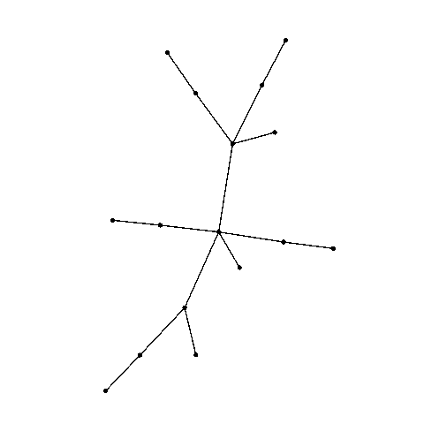
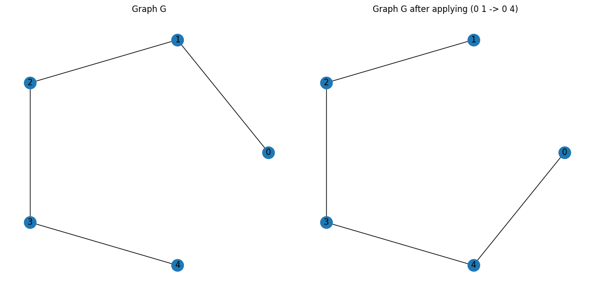

Welcome to FerGroup
The comprehensive framework for the study of Amoeba graphs and the \operatorname{Fer} group. Scroll down to get started with just a few lines of Python code!
Features
-
Intuitive isomorphism chains
Perform operations like products and shifts with simplified chains for readability and efficiency.
-
\operatorname{Fer} group computation
Computation of the \operatorname{Fer} group for any graph. Flexible isomorphism criteria, such as node color constraints.
-
Database and hypothesis testing
Automatically queried to avoid recomputation. Offers a foundation for hypothesis testing and statistics.
-
Powerful visualization tools
Animate \operatorname{Fer} actions, including automorphisms. Export in any format for presentations and publications.
-
Cutting-edge algorithms and hypothesis testing
Factor chains into generators. Verify claims on a large set of graphs. Find complex counterexamples.
-
Potential applications in network design
Networks with large \operatorname{Fer} groups may have strong fault tolerance properties.
Quick Start
Please consult the User Guide for the complete project documentation.
You can find all below examples already on Google Colab.
Computing the Fer group of a path
!git clone https://github.com/tonamatos/FerGroup.git
%cd FerGroup
from fer_group import Fer_group
import networkx as nx
# Generate graph and find Fer group
G = nx.path_graph(5)
K = Fer_group(G)
print(K)
Automorphism generators
(4) : (0 -> 0)
(0 4)(1 3) : (0 -> 0)
Non-trivial Fer object generators
(1 4)(2 3) : (0 1 -> 0 4)
(4)(0 1) : (1 2 -> 0 2)
(0 1)(2 4) : (1 2 -> 0 4)
(2 4) : (1 2 -> 1 4)
(4)(0 2) : (2 3 -> 0 3)
(0 2)(3 4) : (2 3 -> 0 4)
(3 4) : (2 3 -> 2 4)
(0 1 2 3 4) : (3 4 -> 0 4)
fer object manipulation
We can interact with the elements of the \operatorname{Fer} group. These can be defined manually or taken from an existing group, like the one above. We showcase both posibilities.
Multiplication order
In this framework, permutations are always multiplied left to right, as opposed to most literature on Group Theory.
# Take the first two non-automorphism fer objects in K
fer1 = K.non_aut[0]
fer2 = K.non_aut[1]
# Multiplication is left-to-right
fer3 = fer1*fer2
print(fer3)
# Manual definition
from sympy.combinatorics.permutations import Permutation
from feasible_edge_replacements import Feasible_edge_replacement as Fer
# Define the permutations
p1 = Permutation(1,4)(2,3)
p2 = Permutation(4)(0,1)
fer1 = Fer(old_edge={0,1}, new_edge={0,4}, permutation=p1)
fer2 = Fer(old_edge={1,2}, new_edge={0,2}, permutation=p2)
# Multiplication is left-to-right
fer3 = fer1*fer2
print(fer3)
(0 1 4)(2 3) : (0 1 -> 0 4)(3 4 -> 0 3)
Powerful tools at your disposal
FerGroup makes complex information on the group easily available.
print("Group order:", K.group.order())
print("Orbits:", *K.group.orbits())
print("Is symmetric?", K.group.is_symmetric)
print("Is abelian?", K.group.is_abelian)
print("Is primitive?", K.group.is_primitive())
print("Number of automorphisms:", len(K.automorphism))
print("Stabilizer:", *K.group.pointwise_stabilizer([0,1,4]))
Group order: 120
Orbits: {0, 1, 2, 3, 4}
Is symmetric? True
Is abelian? False
Is primitive? True
Number of automorphisms: 2
Stabilizer: (4)(2 3)
Plotting
import matplotlib.pyplot as plt
from Fer_G import edge_replace
# Apply an edge-replacement
H = edge_replace(G, (0, 1), (0, 4))
# Create layout and plot
pos = nx.circular_layout(G)
fig, axes = plt.subplots(1, 2, figsize=(12, 6))
# Draw graphs
nx.draw(G, pos=pos, with_labels=True, ax=axes[0])
axes[0].set_title("Graph G")
nx.draw(H, pos=pos, with_labels=True, ax=axes[1])
axes[1].set_title("Graph G after applying (0 1 -> 0 4)")
# Show plot
plt.tight_layout()
plt.show()
